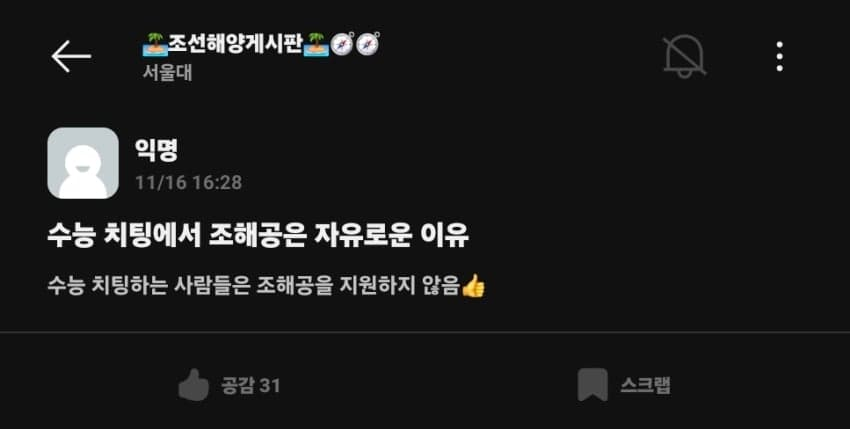

서울대 치팅의혹 해소 ㄷㄷ
댓글
조해공이뭔지방금알앗다
ㄷㄷ 한국사람이 왜 조선의 기술을 배우는거지? ㅠ 거북선만드는 학과인가봄 ㅠ
ai로 서울대 가면 서울대에서 살아남을수 있나..?
조해공은 배타서 살아남을듯 ㅋㅋ
배타는 학과가 아니라 배 만드는 학과임..
만드는 애들은 대체당해서…
서울대 가서도 ai쓰겠지ㅋㅋ
중경외시 갈 실력이라면 서울대 집어넣어놔도 중~저학점으로라도 졸업은 할 수 있긴 할텐데
중경외시 갈 실력이면 수능때 뽀록으로 두세문제 더 찍어맞춰서 연고서성한 갈 수 있기를 기도하지 ai쓰진 않을듯ㅋㅋ
족보라고 들어보셨습니까? 그리고 대학 중간고사 기말고사에 뭐 전자기기탐지기같은거 준비하지도 않을꺼고 오히려 더 ai안경같은거 쓰기 편할듯
그런컨셉이군요
ㄹㅇ 욕심안내고 신학과, 광고홍보학과, 국어국문학과, 일어일문학과 이런곳가면 안걸리고 어떻게든 졸업 가능할듯ㅋㅋ
치팅해서 신학과는 좀 재밌네 ㅋㅋㅋㅋㅋㅋㅋㅋ
ㅋㅋㅋㅋㅋ수능은 통과했어도 나중에 지옥감!
Ai로 영혼이력 해킹해서 천국갈듯
머신스피릿 ㄷㄷ
신학과 치팅은 신내림 받는거 아님?
서울대에는 그중에 국어국문학과만 있어!
ㄹㅇ 어떻게 없는거만 딱 집었나싶음
서울대에는 그런과가 있나보군요..
조해공이 제일 낮나? 우리학교에서도 서울대 보내야한다고 지균으로 조해공 몰빵해서 보내던데
아무래도 지방근무 때문에 상대적으로 낮긴한데 그렇게까지는 안 낮음
간호학과가 젤 낮을텐데
서울대갈 실력으로 간호학과 가는건 좀 너무 아쉽겠다 ㅋㅋㅋㅋㅋㅋㅋ
그래서 서울대 간호학과 신입생 휴학률은 60%정도됨 어차피 공부 좀더하면 좋은곳 가니까 걸어만 놓는거임
블랙코미디 씨다 씨 ㅋㅋㅋ
내친구 지균은 문이과1등들한테 뺏기고
서울대일반으로 조해공 수시 스나해서들어감 ㅋㅋㅋ 일반적으로 큰 뜻 없음 선호할과는아니지
전과 노리고 들어가는애들 은근히 많을지도
그래서 전과를 잘안시켜준대
조선은 업사이클이 와도 중국때문에 반도체마냥 신조선가를 못올려서 진짜지랄임 ㅋㅋㅋㅋ
오세요
가세요
서울대 조해공나와서 삼성ds도 가더라
조해공 졸업했는데 결국 다 의대 아님 치대 기항대학원갔음...ㅜ
조해공이 뭔데
"누가 서울대 가는데 조해공을 지원해요"
조해공... 어찌하여 원서만 오셨소
솔직히 협문은 어떻게든 졸업 가능할듯... 입학하고나서부터 그냥 뺑뻉이 놀다가 학점 박은채로 겨우 졸업만 하는애들 한둘 아니고
그걸 노리고 조해공 지원